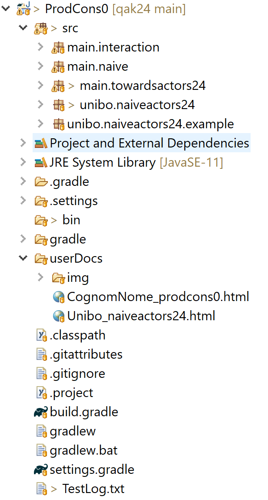

ProdConsSystem¶
Un caso di studio con cui iniziare ad affrontatre l’analisi e la progettazione di sistemi distribuiti
è un sistema formato da a N Produttori che inviano informazione a 1 Consumatore.
ProdsCons: requisiti¶
Costruire un sistema software distribuito costituio da N (N>=1) Produttori che
inviano informazione a 1 Consumatore, il quale deve elaborare tale informazione.
La dislocazione dei componenti sui nodi di elaborazione può essere:
OneNode: tutti i componenti operano nello stesso nodo;
TwoNodes: gli
NProduttori operano in uno stesso nodo, mentre il Consumatore opera in un diverso nodo;ManyNodes: il Consumatore opera in suo proprio nodo, mentre i Produttori operano su
Knodi diversi (1<K<=N).
ProdsCons: analisi dei requisiti¶
I Produttori e il Consumatore sono enti computazionali attivi e autonomi.
I requisiti non stabiliscono come l’informazione debba essere trasmessa e ricevuta.
I Produttori e il Consumatore potrebbero essere realizzati con linguaggi di programmazione diversi.
Nel caso di sistema distribuito, qualche conponente potrebbe essere dislocato sula sonda su un pianeta diverso dalla Terra (ad esempio Marte). In questo caso le comunicazioni avvengono in tempi lunghi; ad esempio per giungere su Marte dalla Terra (o viceversa) un messggio impiega da 4 a 24 minuti, a seconda delle posizioni relative dei due corpi celesti. Il committente però dice che .
ProdsCons: analisi del problema¶
I Producer possonon inviare informazione in forma fire-and-forget. Va però osservato che l’uso del protocollo
HTTPoCoAPimplica sempre l’invio di informazione di risposta dal Consumer al Producer.i requisiti non precisano questo aspetto e l’analisi non ha detto nulla in merito: è opportuno .
L’architettura logica del prodotto da realizzare può essere impostata come un sistema in cui:
il Consumer opera come un server. e i Producer operano come client:
Sembra infatti inopportuno pensare che il Consumer ottenga informazione ‘chidendola’ ai Producer. In quati caso, i Producer dovrebbero operare come server e il Consumer come client.
Una architettura client-server induce a introdurre una conessione in cui i Producer devono conoscere i valori
hostAddr:entrydel (server del) Consumer e il Consumer non deve conoscere nulla dei Producer.Esempio nel mondo reale: una persona suona il campanello di una abitazione.
un Producer depone l’informazione su un ‘oggetto intermediario’ da cui il Consumer può prelevarla: .
In un sistema concentrato, questo intermediario sarebbe un Buffer, mentre in un sistema distribuito potrebbe essere un Broker MQTT.
Usando MQTT, i Producer possono depositare (publish) le loro informazioni sulla topic su cui ‘sanno’ che il Consumer fa una subscribe.
Esempio nel mondo reale: un componente pone una lettera in una cassetta postale da cui un altro componente può prelevarla.
il Consumer opera come observer dei Producer: dopo avere prodotto informazione, un Producer fa in modo che essa risulti percepibile dal Consumer: .
Esempio nel mondo reale: una ambulanza accende la sirena.
Scenari¶
Come analsti, queste alternative.
Un possibile risulatoi della riunione è che:
tutti gli scenari sono possibili e andrebbero realizzati/sperimentati
si ritiene opportuno (inziare con lo) sviluppare il primo scenario usando lo schema 1 (Produttori connessi al Consumatore) e il protocollo
TCP.
ProdsCons: progettazione¶
Dopo l’analisi dei requisiti e del problema, si tratta di realizzare un sistema client-server in cui il Consumer funge da server-TCP e ogni Producer opera come un client-TCP.
Come progettisti osserviamo che:
possiamo usare Java come linguaggio di programmazione, insieme a una libreria di supporto relativa al protocollo.
possiamo usare Java come linguaggio di programmazione e la libreria unibo.basicomm23 che permette di velocizzare la progettazione e la realizzazione del prodotto.
L’uso di questa libreria promuove codice basato sul concetto di Interaction che facilita la possibilità di modifica del protocollo.
L’architettura logica di progetto può essere schematizzata come in figura:

dopo la produzione in ‘tempi brevi’ del primo prototipo, potrebbe essere utile un refactoring del codice usando gli Abilitatori di comunicazione di unibo.basicomm23.
Il vantaggio consiste nella definizione di un prodotto che potrebbe costitire la base con cui affrontare in tempi brevi lo sviluppo di prodotti secondo gli altri Scenari.

ProdsCons: progetti¶
Struttura del progetto Si noti la directory che contiene il diario del progetto con link al codice. Al momento, non vi è una directory riservata ai test, che vengono inseriti come codice ‘normale’. Discuteremeo più avanti sulla opportunità di inserire una directory di questo tipo. |
 |
{kind=link}
ProdsConsNaive¶
Relizza il sistema usando Java e le socket.
Un Thread che realizza un ServerTcp sulla porta |
|
Un Thread che usa una socket per connettersi alla porta |
|
Main program di configurazione di 2 Producer e 1 Consumer nella stessa JVM. |
ProdsConsEnablers¶
Usa Java e classi di supporto che realizzano il concetto di Connessione.
Un componente che realizza un ServerTcp sulla porta |
|
Un componente che usa ConnectionFactory.createClientSupport per connettersi alla porta |
|
Main program di configurazione di 2 Producer e 1 Consumer nella stessa JVM |
|
Main program che lancia il Consumer |
|
Main program che lancia 2 Producer sulla stessa JVM |
:
il concetto Connessione permette di nascondere a livello applicativo i dettagli del protocollo, ma si muove nello spazio concettuale dei sistemi client-server (il Produce è un client, il Consumer è il server);
il client può eseguire in modo esplicito un metodo (bloccante) per acquisire informazione dal server;
il Consumer può interagire con un Producer solo dopo che questi lo ha chiamato. Il Consumer non conosce quanti Producer ci sono o ci possono essere nel sistema.
TestPlans per ProdCons¶
Il Testing è una delle attività principali nello sviluppo del software.
Ricordiamo che, , l’obiettivo non è quello di eseguire dei test, ma quello di definire i test in modo che possano individuare in modo automatico le falle del software rispetto ai requisiti.
L’obiettivo di definire un Piano di Testing () automatizzabile, introduce di fatto un nuovo requisito: rendere l’applicazione osservabile, o meglio:
.
ProdCons User Stories¶
Introduciamo due possibili TestPlan per il sistema ProdCons usando il linguaggio naturale, attrverso la introduzione di una o più User story ->:
: come Producer, mi aspetto:
di inviare una request in modo sincrono cone payload
distance(22)e di verificare che il Consumer mi invii la rispostaack(distance(22));che altri Producer possano agire allo stesso modo, e che il Consumer non mi invii la risposta destinata a un altro;
di inviare una request R1 in modo asincrono, di eseguire altre azioni e di poter ricevere la risposta in un secondo momento. Se le mie altre azioni includono una nuova richiesta R2 sincrona, la risposta non dovrebbe essere quella relativa a R1.
L’osservabilità deriva qui dalla possibilità di ricevere risposta dal Consumer.
: come Producer, mi aspetto:
di inviare un dispatch cone payload
distance(22)e che il Consumer la elabori.
L’osservabilità in questo caso non esiste: occorre trovare un modo per verificare che il Consumer riceva il dispatch.
Al momento faremo uso di un file di Log: quando il Consumer main.towardsactors24.ConsumerAsActors24 gestisce un dispacth, inserisce il messaggio in un file di nome
TestLog.txt.In seguito, introdurremo il concetto di componente osservabile, di cui abbiamo un primo esempio in Il servizio come sistema osservabile.
Osserviamo che:
Enunciare i TestPlans a parole è un primo passo, utile ma .
Ciò che occorre è esprimere un TestPlan in modo che sia interpretabile ed eseguibile in modo automatizzato da un computer. Per raggiungere questo obiettivo sono stati sviluppati strumenti appositi.
Uno strumento molto diffuso è JUnit ->, ideato da Beck e Gamma come supporto al concetto di collaudo continuo nell’ambito di processi di sviluppo agili e incrementali.
ProdCons Testing¶
Si veda main.interaction.TestProdConsInteraction.
|
public class TestProdConsInteraction {
private static Interaction connSupport;
@BeforeClass
public static void activateConsumer() {
CommUtils.outmagenta("activateConsumer");
new MainEmablersConsumerOnly().configureTheSystem();
connSupport = ConnectionFactory.createClientSupport(
ProtocolType.tcp, "localhost", "8888");
}
@After
public void down() {
CommUtils.outmagenta("end of a test ");
}
|
|
@Test
public void testRequest() {
CommUtils.outmagenta("testRequest =================== ");
//Funge da Producer come ProducerUsingConnection
IApplMessage req = CommUtils.buildRequest(
"tester", "distance", "distance(20)", "consumer");
IApplMessage req1 = CommUtils.buildRequest(
"tester", "distance", "distance(30)", "consumer");
try {
IApplMessage reply = connSupport.request(req);
CommUtils.outblue("reply="+reply);
String answer = reply.msgContent();
assertEquals(answer, "ack(distance(20))");
IApplMessage reply1 = connSupport.request(req1);
CommUtils.outblue("reply1="+reply1);
String answer1 = reply1.msgContent();
assertEquals(answer1, "ack(distance(30))");
} catch (Exception e) {
fail("testRequest " + e.getMessage());
}
}
|
|
@Test
public void testDispatch() {
CommUtils.outmagenta("testDispatch ======================= ");
//Funge da Producer come ProducerUsingConnection
IApplMessage msg = CommUtils.buildDispatch(
"tester", "distance", "distance(20)", "consumer");
IApplMessage msg1 = CommUtils.buildDispatch(
"tester", "distance", "distance(30)", "consumer");
try {
connSupport.forward(msg);
connSupport.forward(msg1);
CommUtils.delay(500);
readLogFile();
} catch (Exception e) {
fail("testRequest " + e.getMessage());
}
}
protected void readLogFile() throws IOException {
String line;
IApplMessage m;
File myObj = new File("Testlog.txt");
Scanner myReader = new Scanner(myObj);
line = myReader.nextLine();
m = new ApplMessage(line);
CommUtils.outblue( ""+m );
assertEquals(m.msgContent(), "distance(20)");
line = myReader.nextLine();
m = new ApplMessage(line);
CommUtils.outblue( ""+m );
assertEquals(m.msgContent(), "distance(30)");
myReader.close();
}
|
il codice che scrive in un Log-file all’intero di un compoennte main.interaction.ConsumerUsingEnablers appensantisce il componente stesso. Per evitralo, si potrebbe introdurre un opportuno supporto, oppure, ancora meglio, fare ricorso al Observer pattern.
Esamineremo meglio l’idea di introdurre gli observers affrontando i problemi proposti in Da fare Lez6.
E’ il momento di introdurre un , in cui Consumer e Producer sono componenti di una stessa categoria (gli Actor), in cui non occorre più parlare di clent e server, ma solo di informazioni trasmesse, informazioni ricevute e capacità di elaborare le informazioni ricevute.